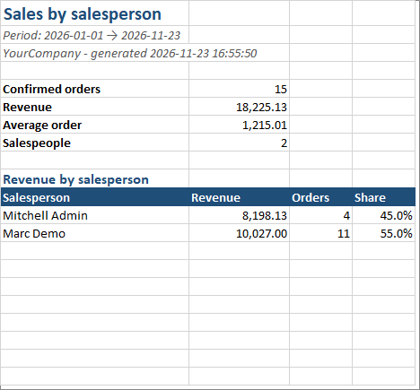
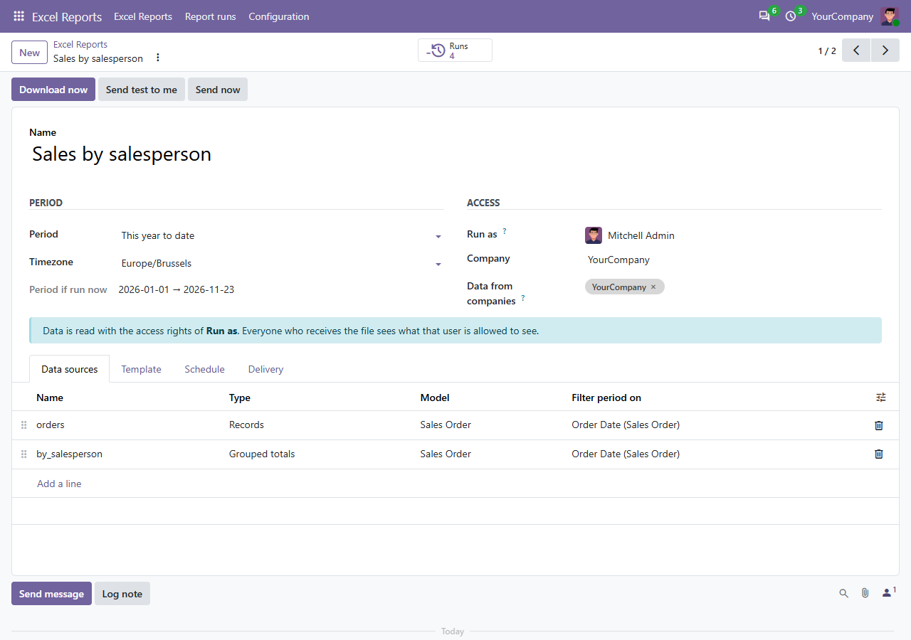
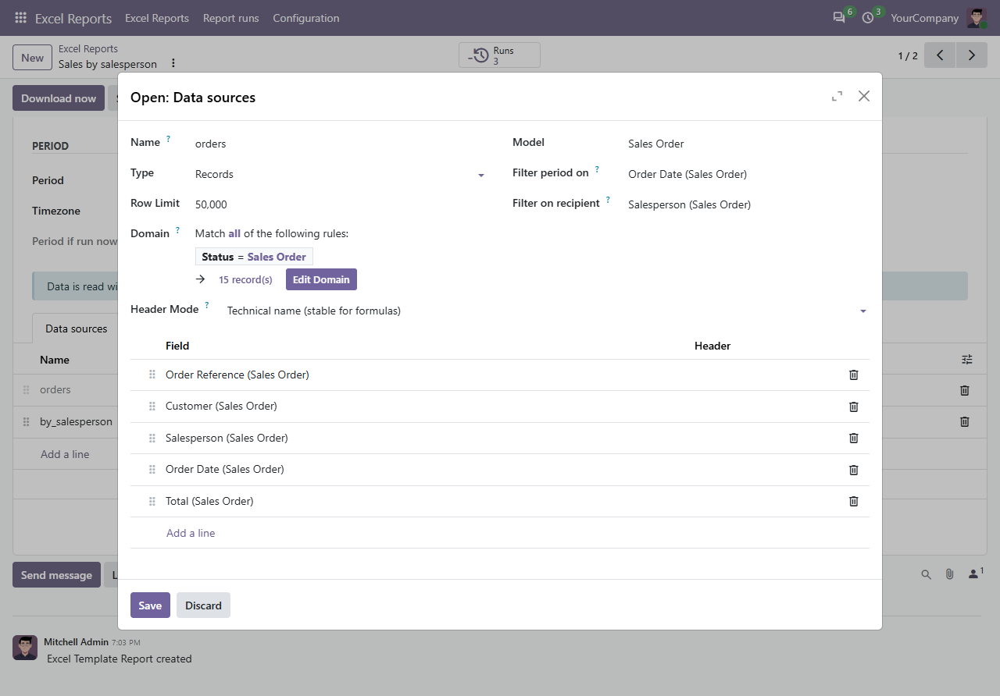
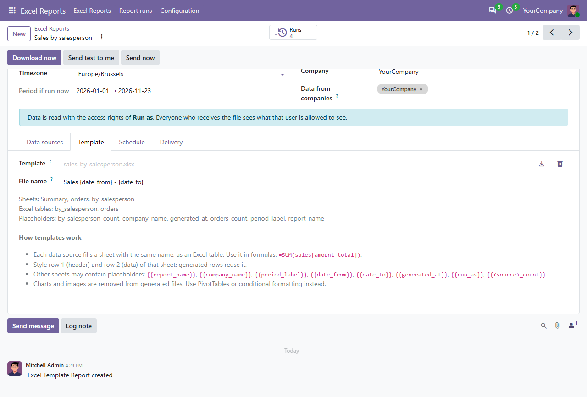
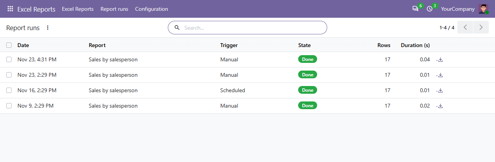

Keep the report your team already knows: colours, number formats, totals and formulas. Point each sheet at Odoo data, pick a period such as last week or month to date, and download the file filled in, ready to open in Excel.

A generated report, opened in Microsoft Excel
Data sources, template, schedule, delivery, run log and the result in Excel, recorded on a demo database.
No developer, no XML, no report designer.
orders) and a summary sheet with your layout. Formulas refer to the data as an Excel table: =SUM(orders[amount_total]).{{period_label}} and gives you the file. Excel recalculates your formulas when it opens.Standard forms, the domain editor you already know, a log of every run.




Adds schedules and delivery by email or Telegram on top of this free module.
| Odoo | Community | Enterprise |
|---|---|---|
| 20.0 | ✓ | ✓ |
| 19.0 | ✓ | ✓ |
| 18.0 | ✓ | ✓ |
| 17.0 | ✓ | ✓ |
Depends only on Discuss (mail). Odoo 18 and later ship the openpyxl library; on Odoo 17 install it first: pip install openpyxl.
Installation help and bug fixes for your Odoo version are included. Send us your spreadsheet and we will help you connect it to Odoo.
✉ gray.wolf1290@gmail.comMicrosoft and Excel are trademarks of the Microsoft group of companies. This module is not affiliated with or endorsed by Microsoft.